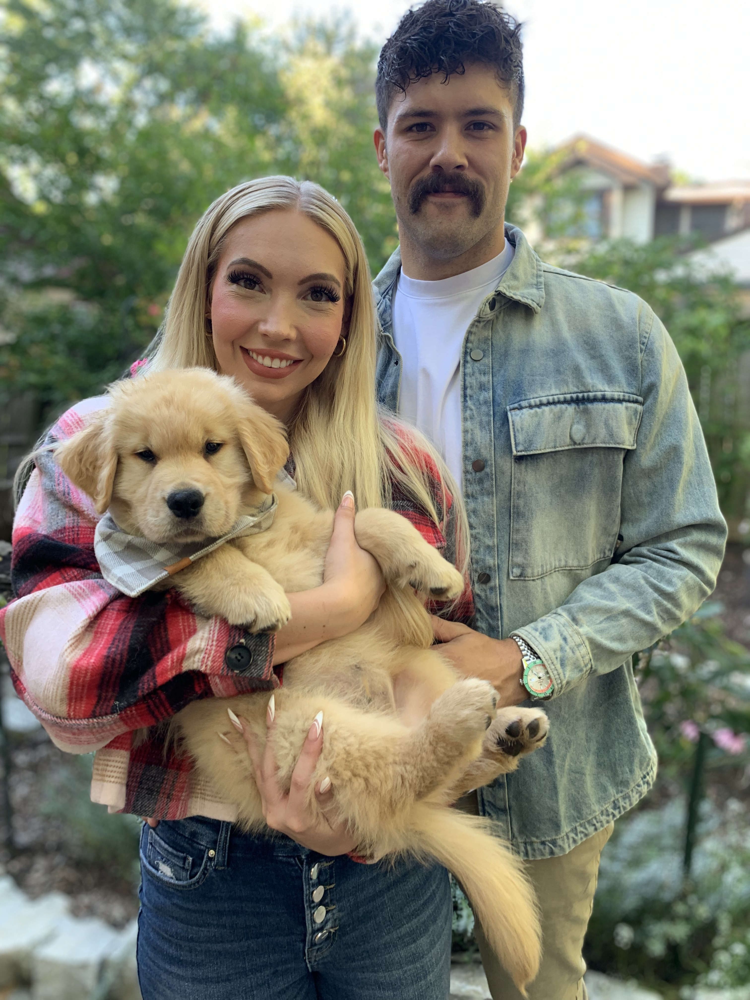

about
a few things about me
Indy
I live in Indianapolis, Indiana. It’s a great city with an extremely relaxed vibe.
I live here with my partner Hattie. We both really enjoy living downtown.
Walking to resturants, coffee shops, movie theaters, etc. is unbeatable. At this point, I can’t see myself moving out of the city.
kevin

Hattie & I picked him up in September. He was 10 lbs. A month later he was 21 lbs.
Kevin is a large guy (and a very good boy).
This is my first pet ever. Puppies are no joke. Training Kevin has been an arduous process.
Though, we are going to have fun along the way.

ball state
I played football at Ball State University in Muncie, Indiana. I had a ton of fun. Senior year, my teammates elected me a captain, which is an accomplishment I hold very dearly.
I loved living in Muncie. Most folks find this strange!
For a while, I was incredibly glad to be finished playing. I’m now ~5 years out and am beginning to miss it.
..or maybe I am just forgetting the injuries…